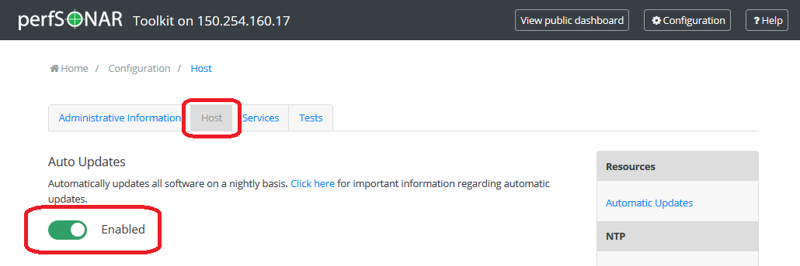

Just like any other host on your network, it is critical to stay up-to-date with the latest packages on your perfSONAR Toolkit. You will want to make sure you have the latest security fixes as well as the ability to take advantage of the great new features constantly being added to the tools. In general you will keep your host up-to-date with the operating system’s package manager (e.g. yum or apt), but in some special cases things may be more involved. Be sure to watch release notes and this page when such cases arise.
Anytime you want to manually update your host, simply run the following
CentOS:
yum update
Debian:
apt update
apt upgrade
The yum package manager is used by RedHat-based operating systems like CentOS to update packages, apt-get is used by Debian-based OS. Running the command above will download the latest perfSONAR packages as well as any operating system packages available.
Note
When upgrading a Debian based host to a new minor version (X.Y.Z with X or Y changing), you’ll be asked by APT to accept the change in Version and Codename of the perfsonar-release repository.
Note
Automatic updates are enabled by default in the perfSONAR Toolkit.
You may choose to enable automatic updates to aid in applying the latest software packages to your system. Automatic updates include all perfSONAR, operating system and third-party packages. Enabling this feature will help keep the latest security fixes on the system, but keep in mind it is possible some updates may break your host unexpectedly. The following rule of thumb from Fedora may be useful when considering whether to enable this feature:
If the machine is a critical server, for which unplanned downtime of a service on the machine can not be tolerated, then you should not use automatic updates. Otherwise, you may choose to use them.
It is also important to note that automatic updates do not perform all required system reboots or service restarts. Also, auto-updates happen nightly so there may be a period of up to 24 hours where you do not receive a patch. Enabling this feature still requires close monitoring of the host to make sure all updates are applied completely and properly.
You can manage auto updates from the command-line by enabling/disabling the yum-cron service on CentOS and configuring the unattended-upgrades option of APT on Debian and Ubuntu.
Run the following commands to enable automatic updates (must be run as a root user):
CentOS:
systemctl enable yum-cron
systemctl start yum-cron
Debian/Ubuntu:
apt-get install unattended-upgrades
/usr/lib/perfsonar/scripts/system_environment/enable_auto_updates new
Likewise, you may disable auto-updates from the command-line by running the following:
CentOS:
systemctl stop yum-cron
systemctl disable yum-cron
Debian/Ubuntu:
apt-get purge unattended-upgrades
rm -f /etc/apt/apt.conf.d/60unattended-upgrades-perfsonar
CentOS:
These commands will automatically update all packages on the system. Also note that the main configuration file for auto-updates lives at /etc/yum. See the yum-cron man page or the page here for more information on using auto-updates and advanced options like excluding packages from update. Also see Disabling Automatic Updates for perfSONAR Packages.
Debian/Ubuntu:
This configuration enables automatic updates for Debian security updates or Ubuntu security updates and perfSONAR packages.
If you are running the perfSONAR Toolkit, you may enable/disable automatic updates for all packages (not just perfSONAR) on the system from the web interface as follows:
Open your toolkit web interface in a browser.
Click on Edit (A) in the host information section of the main page or Configuration (B) button in the right-upper corner and login as the web administrator user created during installation.

See also
See Managing Users for more details on creating a web administrator account.
On the Host tab click the button under the Auto Updates heading to enable or disable auto-updates as indicated by the color and status text of the button.

Click Save to apply your changes. After a loading screen you should see a green message at the bottom indicating your changes have been saved.
The commands in the previous sections control updates for the entire system. If you want to leave automatic updates on for base system packages, but would like to just disable the perfSONAR updates you can do so by following the steps in the previous sections and editing the file /etc/yum.repos.d/perfSONAR.repo with the option enabled set to 0.
Note
If you are running against one of our testing repositories you may also need to update the files /etc/yum.repos.d/perfSONAR-staging.repo and /etc/yum.repos.d/perfSONAR-nightly.repo.
To disable the automatic updating of perfSONAR packages on Debian/Ubuntu delete the line with origin=perfSONAR pattern from /etc/apt/apt.conf.d/60unattended-upgrades-perfsonar. After that only the Debian security updates will be installed automatically.
perfSONAR 5.0.0 brings with it a number of changes, the largest of which is the migration away from the default archive of esmond to a new archive based on OpenSearch. DATA WILL NOT BE MIGRATED FROM ESMOND TO OPENSEARCH
The update behavior you will see depends on the bundle you have installed:
The CentOS 7 based ISO image for the Toolkit is no longer available starting in 5.0. The operating system packages (.rpm and .deb packages) as well as Docker containers will be the supported options going forward.
perfSONAR 5.0.0 includes a component named elmond that provides full backward compatibility for esmond queries. The URL and format are exactly the same, so should be transparent to clients.
pScheduler has removed support for the test limit type. It has been folded into the jq type. If you have not modified your limits file, then your limits file will be upgraded automatically. If you have made changes then you will have to manually migrate to the new format. The exact change will depend on your rul but an example of the new and old style can be found below:
Old format:
{
"#": "This prevents denial of service by scheduling long tasks.",
"name": "idleex-default",
"description": "Default limits for idleex",
"type": "test",
"data": {
"test": "idleex",
"limit": {
"duration": {
"range": {
"lower": "PT1S",
"upper": "PT2S"
}
}
}
}
}
New format:
{
"#": "This prevents denial of service by scheduling long tasks.",
"name": "idleex-default",
"description": "Default limits for idleex",
"type": "jq",
"data": {
"script": [
"import \"pscheduler/iso8601\" as iso;",
"if .test.type == \"idleex\" and iso::duration_as_seconds(.test.spec.duration) > 2",
"then \"Duration for idleex must be less than 2 seconds.\"",
"else true",
"end"
]
}
}